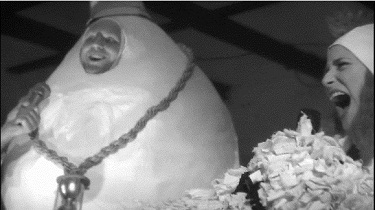
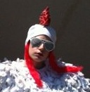
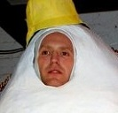

THE CHICKEN AND THE EGG
A History
 Even casual fans of the gangsta pantry movement remember the Chicken and the Egg, true pioneers of the genre, as well as recall their infamous rivalry, which dominated the street corners, concert halls, and larders of the late 80s. The Egg burst onto the scene in 1987 with his debut album Shell Game, whose hit singles "Hollandaze" and "Straight Outta Carton" cracked the Billboard Top Ten. The Chicken launched her career beatboxing for the novelty poultry act The Three Caballeras, but rejected the group's mainstream sound and broke free with her own hardbeaked solo album, Roostin' (also released in 1987).
From the beginning, artists and critics were quick to draw comparisons between the Chicken and the Egg's respective rap stylings, with their similarly confrontational lyrics, farm fresh beats, and frequent dairy references. In response, each artist claimed, with mounting fierceness, to be the true originator of the sound and, in a philosophical paradox, to have literally birthed the other. Their increasingly vitriolic barnyard jabs famously culminated in a no-holds-barred freestyle rap battle at Hoggett's in Downtown LA.
The event was so well-attended that police were called to clear the area, and the battle's reputation only grew as bootlegs became widely distributed. In an unanticipated turn, the success of those underground recordings prompted the Chicken and the Egg to suspend their animosity and enter the studio together, producing the lucrative single "Which Came First?" After the accompanying music video (with heavily censored lyrics) became a hit on Yo! MTV Raps, the Chicken and the Egg announced a joint tour, though the plans immediately broke down in a dispute over billing and performance order.
"Which Came First?" would mark the high point of both the Chicken and the Egg's careers. The Chicken's 1990 album, Nature of a Bird, alienated audiences who were unprepared for the explicitly sexual tone of tracks like "Peckin'," "Beak Full of Feathers," and "My Cloaca." Following the record's commercial failure, the Chicken left hip hop and went on to pursue a short-lived acting career, achieving modest success with the mid-90s TGIF sitcom Hangin' with Mrs. Coop. The Egg himself grew disinterested in rap and launched the thrash metal band Benedikt, an experiment that ended prematurely at Lollapalooza in 1991 when an (apparently intoxicated) Egg rolled off the stage and smashed into a million pieces.